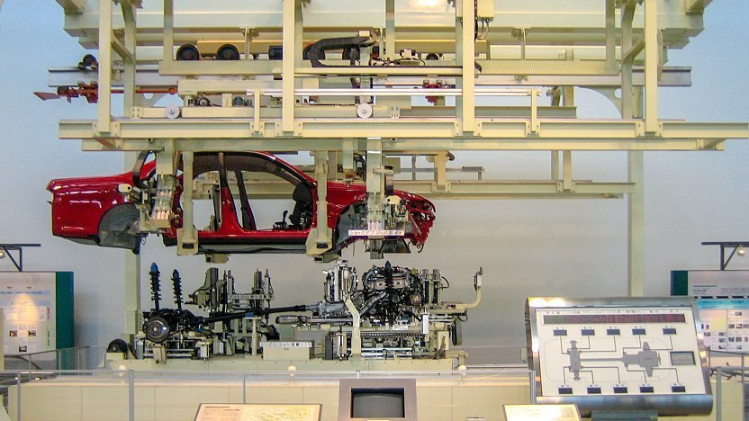
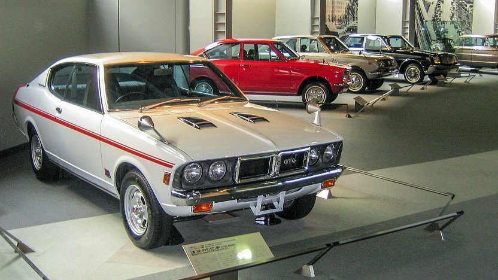

Toyota Factory Tour and Museums
Japan's leading car manufacturer, Toyota, has its headquarters and many of its domestic production plants in the region around Nagoya. The company's headquarters are located in the city of Toyota, less than one hour east of central Nagoya. Next to the headquarters stands the Toyota Kaikan Museum, where Toyota displays its new models and technologies to the public.
The Kaikan Museum also serves as the meeting point for plant tours (currently suspended until further notice due to the coronavirus pandemic). Tours are held once daily from Monday to Friday in English and Japanese. If you wish to join a tour, you need to make an advance reservation via the internet (see English Links below) or by phone. Tours last approximately 2.5 hours and are free of charge.
For people who cannot make it on a plant tour, the best substitute is a visit to the Toyota Techno Museum (also known as Commemorative Museum of Industry and Technology) in central Nagoya. The museum introduces the history of Toyota from its beginnings as a textile machinery manufacturer and also features many exhibits on automotive technologies and the car production process.
Car fans should also consider a visit to the Toyota Automobile Museum, which exhibits Japanese, European and American automobiles from the late 1800s to the 1960s.
